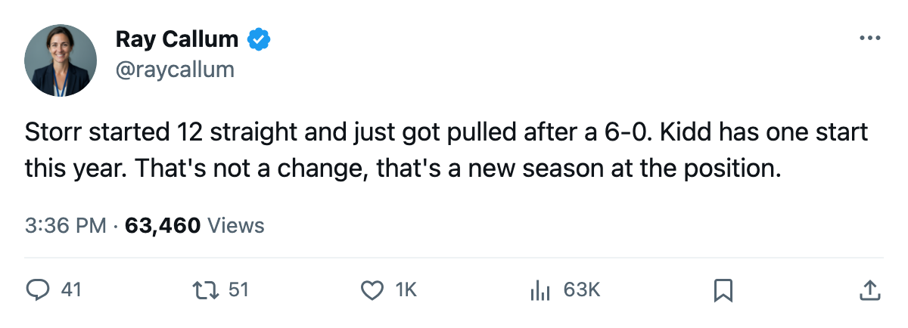

OTT
OTTRECAP: Ottawa 6, Colorado 0 -- and the Avalanche Changed Everything Afterward
Storr is off the roster, Kidd takes the crease, and Peter Forsberg gained center slots on two more lines
 Ray CallumSenior correspondent · Home Ice Network
Ray CallumSenior correspondent · Home Ice Network Colorado Avalanche lost 6-0 to Ottawa on Nov 6 at home, outshot 19 to 26, and by the next morning the Avalanche had changed their goaltender, rearranged four forward lines, and added two men to the lineup.
Colorado Avalanche lost 6-0 to Ottawa on Nov 6 at home, outshot 19 to 26, and by the next morning the Avalanche had changed their goaltender, rearranged four forward lines, and added two men to the lineup.
 Jamie Storr83 had started 12 of 13 games this season, a 92% workload that left
Jamie Storr83 had started 12 of 13 games this season, a 92% workload that left  Trevor Kidd83 with exactly 1 appearance. The league's lineup records now show Kidd promoted to G1,
Trevor Kidd83 with exactly 1 appearance. The league's lineup records now show Kidd promoted to G1,  Philippe Sauve79 added at G2, and Storr off the roster entirely. Third goaltender situation in four days on this desk, three days after a 6-goal deficit in the building.
Philippe Sauve79 added at G2, and Storr off the roster entirely. Third goaltender situation in four days on this desk, three days after a 6-goal deficit in the building.
 Peter Forsberg95 gained the third-line center slot (32C_) and the first-line center slot (L1C_), where
Peter Forsberg95 gained the third-line center slot (32C_) and the first-line center slot (L1C_), where  Paul Kariya89 had been splitting his time between center and wing. Kariya dropped to a straight left-wing slot on the first line.
Paul Kariya89 had been splitting his time between center and wing. Kariya dropped to a straight left-wing slot on the first line.  Teemu Selanne86 shifted from right wing to left wing on the second line.
Teemu Selanne86 shifted from right wing to left wing on the second line.  Tim Taylor69 and
Tim Taylor69 and  Scott Nichol71 were both added to the lineup from the press box, filling the third-line center and fourth-line right-wing slots respectively.
Scott Nichol71 were both added to the lineup from the press box, filling the third-line center and fourth-line right-wing slots respectively.
The Avalanche are 4-4-3 with 15 points, sitting 8th in the West. Their home record is 2-4; their road record is 4-3. They scored 35 goals in 13 games but have allowed 40, and tonight's result made that gap worse by 6.
 Alex Tanguay83 is out with a head injury until 2005-12-19, the longest absence on the club. That is 38 of his games if the calendar holds.
Alex Tanguay83 is out with a head injury until 2005-12-19, the longest absence on the club. That is 38 of his games if the calendar holds.
The next three nights test the changes
Colorado hosts  Nashville Predators on Nov 10, then
Nashville Predators on Nov 10, then  Columbus Blue Jackets on Nov 12, then Nashville again on Nov 14. The Predators are 5-3-2 with 18 points, 5th in the West. Columbus are 6-2-1 with 21 points and the fewest days lost to injury in the league (1 day across 8 spells). Colorado's medical ledger sits at 49 days lost, driven mostly by the Tanguay and
Columbus Blue Jackets on Nov 12, then Nashville again on Nov 14. The Predators are 5-3-2 with 18 points, 5th in the West. Columbus are 6-2-1 with 21 points and the fewest days lost to injury in the league (1 day across 8 spells). Colorado's medical ledger sits at 49 days lost, driven mostly by the Tanguay and  Adam Foote86 injuries.
Adam Foote86 injuries.
Storr's 12 starts were the highest workload of any goaltender on a team with 15 or fewer points. Kidd has 1 career start this season, coming in a relief appearance. Sauve has not played a game in this league's records.
The 6-0 loss dropped the Avalanche to -5 in goal differential. They host Nashville in 1 day.
